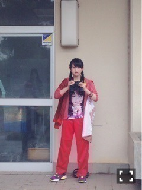

| 2016/07 28 Thu | 首ったけさ。730回目 |
15thシングル『裸足でSummer』
リリース日です！

アンダー曲
『シークレットグラフィティー』
たくさん聴いてね！
ライブで盛り上がる曲にしていきたいな。
MV大画面で見ると会長のひぐち愛が
より暑苦しく感じられるはずー
ダンスシーンでしてた赤のリボンハチマキは
小百合に対抗したいと思い急遽つけました。
山岸さんは12thペアPV以来でした。
はっちゃける機会を与えられて
とても嬉しかった(T . T)
ほんとにまじで心から楽しかったです。

山岸ワールドの住人になれてたかなあ
15th特典映像
『行くあてのない僕たち』
小百合とのユニット曲のタイトル
でもありますが、MVはなく
約30分のショートムービーです！
監督はお世話になっている湯浅さん。
でもなんやかんや10th以来！
「あの日 僕は咄嗟に嘘をついた」
の続編という形でつくっていただき、
手を差し伸べていただきました。
感謝してもしきれないです、、
壁にぶち当たってる状況に対する
甘えや過去にとらわれた私自身の話。
喉とお腹が痛い撮影でありました。
2年前と同じ景色、場所で
カメラマンの今村さんが構えてて、
あの時湯浅さんが私に言った一言を
小百合に同じように言ったのを聞いた瞬間。
ちょっとした段取りの一言なのだけど、
心の奥底にあったいろんな感情が
一気に溢れ出ていきました。
言葉で言い表すのは難しい。
とにかく見ていただきたいです。
嗚咽出るほどに大泣きしました、
撮影後に。
ラストシーンの撮影後に！
なぜだ！なぜ撮影後なんだ！！
湯浅さん、スタッフの皆さん
すみませんでした。
待つ時間も撮ってる時間も心地よくて、
終わるのがすごく寂しかったです。
悔しい思いもしたし、勉強になったし、
ほんとに、ここじゃ終われないなあ
という気持ちになりました。
映像撮影は常にわくわくします。
技術も知識もないけど、好きです。
一生こういう感覚を持っていたいし、
たくさん経験したい。大切にしたい。
私にとって、もちろん小百合にとっても
この曲も作品も特別なものになりました。
良い天気、素敵なスタッフのみなさんに
恵まれてとても楽しかった！

7th個人PV「万理華」
ぶりの再会だった南出くん。
知らない方はこちらもぜひ！
以前撮影終わりに撮った
ツーショット写真を額縁に入れて
メッセージ付きでプレゼントしてくれた！
ありがとう、、！！泣
机に飾っています。ウォッチッチ〜
他の特典映像もぜひご覧ください。
ハンカチかタオルを持って！！
15thぜひともよろしくお願いします！
明日7月28日発売の装苑
なんと、坂道シリーズの衣装特集が。。
ひいー
表紙まで飾ってるよー
すごいー
信じられないー
興奮状態で何も喉にとおらない
まりか
コメント(563)
2016/07/28 00:00